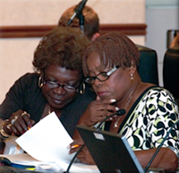
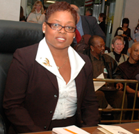
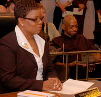
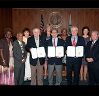
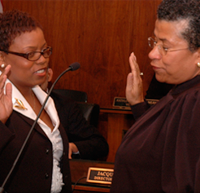
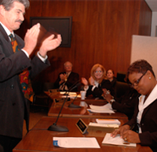
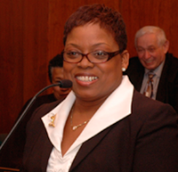
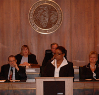

|  |
Making DecisionsCollaborating with Honorable Commissioner Barbara Mcgowen while working together at the Metropolitan Reclamation Water District. In this position, Commissioner Horton was in charge of balancing and maintaining a billion dollar budget, with a staff of 2100 employees. She saved the district millions through her balance cutting measure of cutting each individual departments budget by 10-15%. |
|  |
The Public's VoiceAs former Commissioner of the MRWD, the Honorable Commissioner Pat Horton became the electorate voice of those who elected her to this position. It was by her efforts that caused the increase of transparency and cutting energy costs by renegotiating our energy costs with the respective suppliers. Board hearing are now available online due to Pat's efforts. "The voice of the people can only be heard, when the public has access to the voice of their elected officials." Pat Horton |
|  |
Communication Involves ListeningThe Honorable Commissioner Pat Horton at her inaugural proceedings. While serving the public as MRWD Commissioner, Commissioner Pat Horton's achievements were a direct result in her ability to listen to the issues, develop a plan for resolution, and plan implementation for results. |
In the FieldCommissioner Pat Horton is an "in the field" commissioner. It is in her willingness to go into the field and gather the critical information needed in order to make an solid and informed decision for the benefit of the public. In this picture Commissioner Horton is shown with one of the district engineers to conduct a site visit for upcoming contractual decisions. |
|  |
Award from NACWANational Association of Clean Water Agencies is was established in 1970. Their efforts have allowed federal funding for municipal waste water treatment. Metropolitan Reclamation Water District of Cook County was presented an award by NACWA for their efforts in improving the sewage water quality. The Honorable Commissioner Pat Horton is shown with her fellow commissioners receiving this prestigious award. |
|  |
Due Solemnly ServeThe Honorable Commissioner Pat Horton being sworn into office by the Honorable Judge Jane L. Stuart, Judge of the Circuit Court Cook County. In her six year tenure in office, Commissioner Horton prided herself in her ability to serve the those who entrusted her in this elected office. Through her active efforts, she pursued the fight to eliminate the use of harmful pesticides on the district land. The Metropolitan Water Reclamation District of Greater Chicago is the second largest landowner in Cook County, which is the second largest county in the country. The environmental impact of her efforts took a positive and profound affect in protecting the public's environmental concerns. |
Signature of Public ServiceThe Honorable Commissioner Pat Horton signs herself into public service. Looking, on as a witness is the Honorable David Orr, Cook County Clerk. Her commitment to the public was shown through her implementation of electrical cars, creating substantial savings to the public tax payers. |
|  |
Thanking the VotersWith her first official speaking engagement. The Honorable Commissioner Pat Horton addresses the voters to thank them for their support, and to re-affirm her commitment to serve the public. Her actions spoke louder than her words when she, as the Business Development Director for Deb Corp North (Rogers Park Chambers of Commerce) finalized the construction of the Gateway Project on Howard and Clark. Her efforts resulted in the creation of over 150 jobs. |
|  |
Pat Horton SpeaksWhen the Honorable Commissioner Pat Horton speaks, her dialogue involves her platform and her political agenda that addresses the concerns of her constituents. During her six year tenure as Commissioner for the MWRD, Commissioner Horton's platform addressed balancing the budget, providing greater transparency, and ensuring the compliance of affirmative action. |
|  |
Serious Talk for Serious Issues"Play time is over, it is time to roll up our sleeves and get to work." Pat Horton. Commissioner Horton does not withdrawal from debating the serious issues for upcoming voting decisions. Her commitment to due diligence is demonstrated by her active role is obtaining key information that will result in making a sound and informed voting decision. In her process she always keeps the public's best interest in mind. They are the ones that will feel the direct results of the final decisions made. Demonstrated in her achievements was her ability to save the tax payer millions through re-negotiating energy costs. |